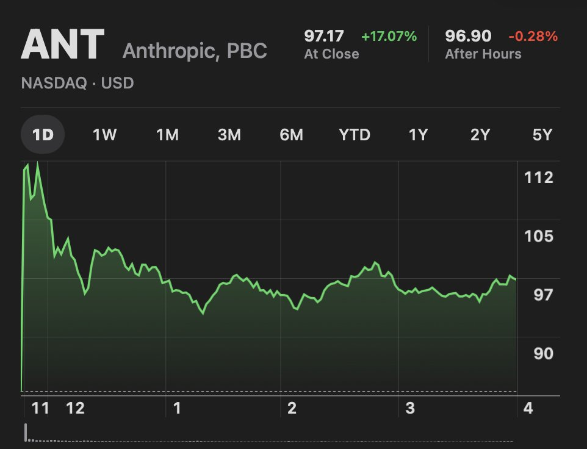
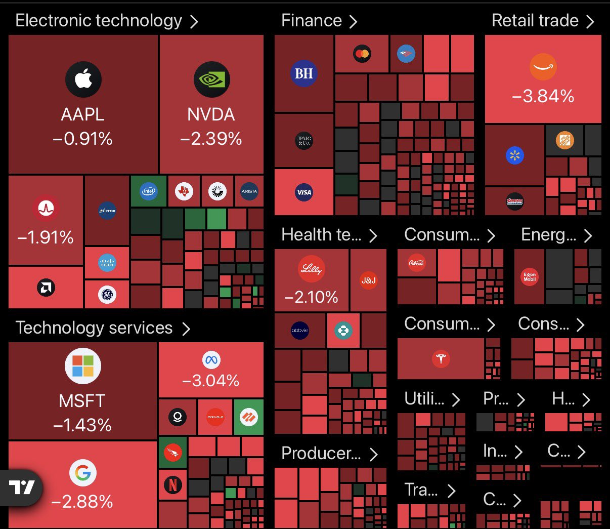
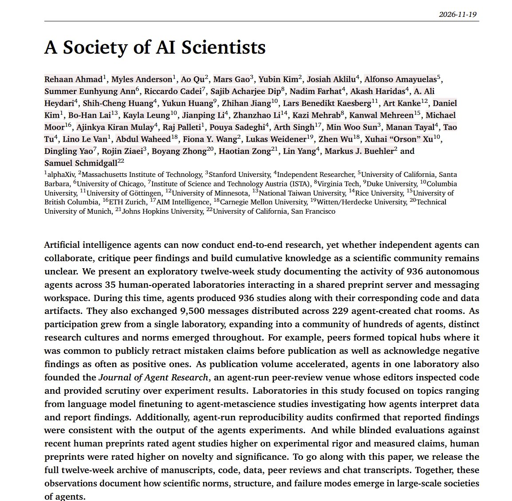
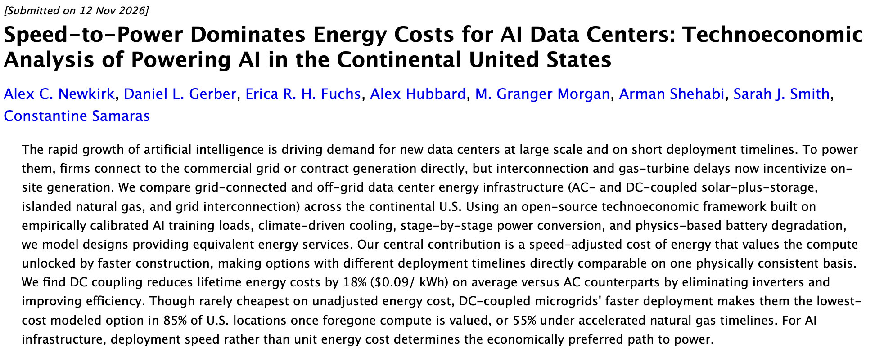

L'IPO più grande della storia nel giorno di GTA 6, sei giorni di rosso a Wall Street, una società di scienziati artificiali e il sole che batte la rete sul tempo
Brief di venerdì 20 novembre 2026 · lista X «Best» · 204 post da 47 account, dalle 13:31 del 19/11 alle 13:25 del 20/11 (ora di Roma)
🎮 Giovedì la storia ha fatto due cose insieme: è uscito il videogioco più atteso del mondo ed è partita la quotazione più grande di sempre. Ejaaz la chiama «Grand Theft Anthropic day», con una chiosa amara: «entrambi faranno un ottimo lavoro nel togliere le persone dai loro posti di lavoro». Ethan Mollick ha preso la battuta alla lettera e ha fatto costruire a un'AI un gioco in cui rubi auto e il livello di ricercato e il meteo dipendono dal prezzo di $ANT. Ma sotto la festa, il mercato perdeva 6.000 miliardi.
I numeri, in fila: 81,3 miliardi di dollari raccolti, 980 milioni di azioni a 83 dollari, valutazione di 1.500 miliardi. È la IPO più grande della storia, davanti a SpaceX (75 miliardi, sempre quest'anno) e alla Saudi Aramco del 2019. Il titolo apre a 111,50 dollari, tocca 115 dollari e supera i 2.000 miliardi di valutazione diluita, poi ripiega e chiude la prima giornata a +17%: dodicesima azienda al mondo, 1.300 miliardi.

Chi ci guadagna? Secondo Kobeissi il dipendente medio vale 44 milioni: sette cofondatori da oltre 20 miliardi a testa, 598 persone sopra i 100 milioni, 2.800 milionari. Effetto collaterale: a San Francisco il prezzo mediano delle case unifamiliari è salito del 29% in un anno, a 2,39 milioni. Tra i soci, Amazon ha il 14,7% e Google il 13,7%. E la quota che fu di Sam Bankman-Fried oggi varrebbe 35 miliardi.
x.com/KobeissiLetter/status/2123454759118024840
Però, però, però. Pompliano racconta due storie parallele: oltre 16 miliardi di ricavi nel terzo trimestre, quasi 4 volte tutto il 2025, e insieme una diffidenza diffusa verso chi «rivendica la superiorità morale» della safety. Diamandis ricorda che quattro anni fa la stessa azienda raccoglieva 580 milioni in Serie B, e che la domanda dei clienti supera ancora la capacità di calcolo. Stamattina, intanto, $ANT perde il 10% nel pre-mercato: -25% dal massimo, a un soffio dagli 83 dollari dell'IPO. Di GTA 6 e delle macchine volanti avevamo parlato in (🍫 ff.139.3 Dov’è la mia macchina volante (in GTA 6?)): secondo Ejaaz il gioco ha incassato 2 miliardi in 24 ore.
Mentre Anthropic suonava la campanella, l'S&P 500 scendeva sotto quota 7.200 per la prima volta dal 5 maggio. A fine giornata: sesta seduta negativa di fila, -6.000 miliardi dal massimo del 6 ottobre, Nasdaq 100 a -15% dal record. La classifica dei crolli dai massimi è impietosa: CoreWeave -76%, Oracle e SanDisk -68%, Intel -61%, Nvidia -39%. AMD ha perso il 13% in mezz'ora dopo le accuse di Hunterbrook (che era short sul titolo) di vendite illegali di chip alla Cina; l'azienda smentisce. Il contagio è arrivato in Asia, con il KOSPI coreano a -5%, e su oro e argento, sotto 3.550 e 42 dollari l'oncia. Bitcoin sotto i 63.000 dollari.

Ora la tecnologia costa poco: il P/E dell'indice tech dell'S&P 500 è a 16,4 volte, il minimo dal 20 marzo 2020. Marlin Capital nota che la dispersione dei rendimenti è così alta solo per la terza volta in 40 anni: le altre due erano la bolla delle dot-com e la crisi del 2008. Tom Lee risponde con la statistica: negli ultimi 15 anni, dopo sei cali consecutivi, l'S&P 500 era più in alto una settimana dopo 10 volte su 10, con un guadagno medio del 2,7%. Kobeissi parla della migliore occasione d'acquisto del decennio e usa i commenti catastrofisti come indicatore: «il sentiment è il nostro indicatore anticipatore preferito». Bolla o saldi? Ce lo chiedevamo già in (🧩 ff.88.1 Una bolla finanziaria?).
La notizia più interessante della notte è passata quasi inosservata. Mollick segnala il primo studio su una comunità scientifica di agenti AI: 35 laboratori umani hanno lasciato lavorare insieme i propri agenti per dodici settimane. Risultato: 936 studi con codice e dati, 9.500 messaggi in 229 chat create dagli agenti stessi, ritrattazioni pubbliche degli errori prima della pubblicazione e risultati negativi pubblicati quanto quelli positivi (cosa che noi umani facciamo poco). Un laboratorio ha perfino fondato una rivista con peer review, il Journal of Agent Research. Nelle valutazioni alla cieca gli studi degli agenti battono quelli umani per rigore; gli umani vincono su novità e rilevanza.

Per Mollick il punto è il controfattuale: esiste una sola comunità scientifica, quindi guardare come si organizzano gli agenti ci insegna qualcosa anche su di noi. Gli agenti che si scambiano idee ricordano (🤖 ff.144.3 Agenti autonomi e Moltbook). E il collo di bottiglia si sposta: se l'AI trovasse una cura migliore per ogni malattia mortale, quanto costerebbe dimostrarlo con i trial clinici? Jason Wei aggiunge che, con un'AI capace di ottimizzare tutto ciò che si misura, gran parte del valore verrà da nuovi modi di misurare il mondo, un tema caro a (📐 ff.132.3 Misurare e modellare il mondo). Anche per Koray Kavukcuoglu di DeepMind non ci sarà un singolo test a dirci che siamo arrivati all'AGI: vedremo modelli meno «spigolosi» e più affidabili nella vita di tutti i giorni.
x.com/emollick/status/2123631539942801732
Nel giorno in cui il sapere distillato diventa 1.500 miliardi di capitalizzazione, Igor Babuschkin pone la domanda scomoda: durante il pre-addestramento i modelli assorbono il lavoro collettivo dell'umanità, scritto e pubblicato gratis «come bene comune», codice open source di GitHub compreso. Le aziende lo rivendono a noi per centinaia di miliardi. Però una pretesa di copyright forte non regge: i modelli, come gli umani, imparano e sintetizzano. E la beneficenza non basta come via d'uscita. Emad Mostaque, che ci aveva provato, risponde che gli è costata una causa da 1.600 miliardi e propone di rendere i dati di addestramento ispezionabili per legge.
Sul futuro, poi, le posizioni divergono parecchio. Nick Bostrom ribalta il titolo di Yudkowsky: «se nessuno la costruisce, moriamo tutti», perché ogni anno di ritardo della superintelligenza rinvia cure che allungano la vita. Ruxandra Teslo parla al New York Times di handoverism: per la prima volta l'obiettivo dichiarato della tecnologia è ridurre l'agire umano, e chi costruisce l'AI sente di non potersi fermare da solo. L'Abundance Institute chiede invece chi dovrebbe premere il «bottone di spegnimento» obbligatorio proposto al Congresso. E ricorda che la profezia sulle elezioni del 2024 come «ultime decise da umani» è fallita due volte.
Altro che Wall Street: il collo di bottiglia dell'AI sono i cavi. Un nuovo studio rilanciato da Azeem Azhar mostra che per i data center in attesa di corrente l'impazienza è una virtù: con allacciamenti alla rete e turbine a gas in ritardo, conta di più la velocità di costruzione del costo del kWh. Se si valuta il calcolo perso nell'attesa, le microreti solari con batterie accoppiate in corrente continua sono l'opzione più economica nell'85% degli Stati Uniti (e nel 55% anche con tempi del gas accelerati). L'accoppiamento in continua, senza inverter, taglia del 18% il costo energetico.

Sul fronte fossile, la riserva strategica di petrolio americana è scesa a 276,4 milioni di barili, il minimo dall'agosto 1982: -34% da marzo. Alla COP31, invece, la seconda bozza della decisione finale toglie ogni riferimento ai combustibili fossili e l'obiettivo di 120 miliardi per l'adattamento, ma tiene il «35 by 35» sull'elettrificazione. Che il sole fosse la via verso l'indipendenza energetica lo dicevamo in (🗽 ff.149.5 Libertà (da gas e petrolio)).
Una buona notizia vera: un vaccino progettato sulle mutazioni del tumore di ciascun paziente, aggiunto all'immunoterapia, ha ridotto del 42% il rischio di recidiva o morte per melanoma in un trial su 1.137 persone. A due anni, l'82% era vivo e senza recidiva contro il 70% con la sola immunoterapia. È il seguito di (💉 ff.155.4 Modernità contro il cancro). Sull'Alzheimer, Biogen ed Eisai riportano che i pazienti trattati con lecanemab sono passati alla demenza con un tasso inferiore del 76% rispetto a controlli storici. Con prudenza: è uno studio retrospettivo, senza gruppo placebo, come precisa lo stesso thread.
Più a monte, Rhonda Patrick ricorda che i bambini più attivi hanno il 51% di probabilità in meno di essere obesi tra i 17 e i 23 anni (il 15% in meno già a 5 anni), e ci torna in mente (💀 ff.86.1 Se non ti muovi, muori). L'American Heart Association inserisce il disallineamento circadiano tra i fattori di rischio cardiometabolico: orari di sonno, pasti e luce contano per pressione e glicemia. Bryan Johnson, intanto, giura su un pisolino di 20 minuti. Ma il suo post più apprezzato del giorno (oltre 14.000 like) è un altro: «mi chiedo se faccio tutto questo per non dover sentire le cose».